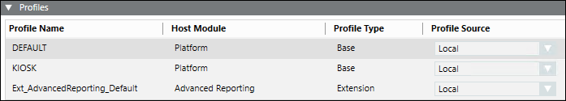

Profiles Expander
When you edit the project, you can work with the Profiles expander.
The Profiles expander lists all the profiles for the originator project including profiles for its extensions. It also displays the profiles for all the linked distribution partner project (including profiles for the configured extensions), if any.
The Desigo CC profiles determine the appearance and behavior of the Summary bar, Event List, and other system functions involved in handling alarms. The extension profiles are designed to meet extension specific needs.
Why Do We Merge Profiles of the Local System with Partner System?
The distribution partner project has its own set of profiles depending on the extensions configured. When you add a distribution partner project to the originator project in automatic mode, the profiles of the linked distribution partner project along with those of the configured extension s are automatically added to the originator project (…\profiles folder on the installation drive). However, when you configure the distribution partner in manual mode, you must manually add the extension s configured in the distribution partner project, which in turn adds the corresponding extension profiles to the originator project.
This is done, so that when you log onto the Installed Client, depending on the distribution connection type and the profiles configured, you can work with the respective functionalities of the linked distribution partner project.
You can add extension s to the originator project using Add to Project, and if the newly added extensions are already installed on the distribution partner project, on Sync, the extensions along with the profiles are updated on the distribution partner project.
The corresponding applications related to the extension do not display, when the profiles are not merged.
The following table describes the relationship between the Distribution Connection type and the profiles of the linked distribution partner project, when added to the originator project.
Distribution Connection Type | Profiles of the Linked Distribution Partner Project |
Originator Project Distribution Partner Project | Added to the Originator Project. |
Originator Project Distribution Partner Project | Added to the Originator Project. |
Originator Project Distribution Partner Project | Not added to the Originator Project. |
When you remove the distribution partner project, the profile entries for that distribution partner are removed from the Profiles expander as well as from the ..\profiles folder of the originator project. Similarly, when you remove the extension of the distribution partner,the corresponding profile entry is removed from the Profiles expander as well as from the ..\profiles folder of the originator project (when no other distribution partner project has this extension configured).

The Profiles expander comprises of the following:
Profiles Expander | |
Item | Description |
Profile Name | Displays the name of the Profile for the Originator project as well as for all the linked distribution partner projects, if any. It also lists the profile names of any extensions configured in the Originator or linked distribution partner project. |
Host Module | Displays the name Platform, if the selected profile is Desigo CC profile. |
Profile Type | Displays the type of profile for the Originator and/or linked distribution participant project. The Profile type can be: |
Profile Source | Displays the profile source: |
For the profiles depending on the selected event schema provided by Headquarters, see the UI Customization Profiles.
Additional Profiles, designed to meet specific needs, can be installed as an extension and added in the project.